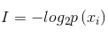
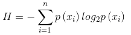
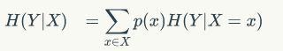
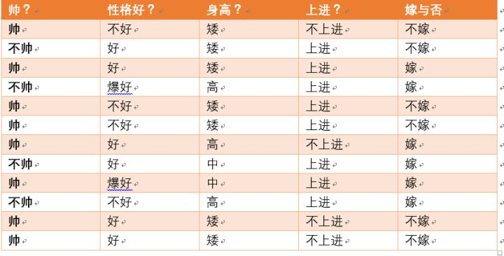

优点:计算复杂度不高,输出结果易于理解,对中间值的缺失不敏感,可以处理不相关特征数据。
缺点:可能会产生过度匹配问题。
适用数据类型:数值型和标称型。
ID3
本文讲解的算法基于ID3。它是一个好的算法但并不完美。ID3算法无法直接处理数值型数据,尽管我们可以通过量化的方法将数值型数据转化为标称型数值,但是如果存在太多的特征划分,ID3算法仍然会面临其他问题。
过程概述
分类算法除了需要测量信息熵,还需要划分数据集,度量划分数据集的熵,以便判断当前是否正确地划分了数据集。
对每个特征划分数据集的结果计算一次信息熵,然后判断按照哪个特征划分数据集是最好的划分方式。
评估每个特征。完成评估之后,原始数据集就被划分为几个数据子集。评估特征的方法使用信息增益，信息增益越高越好，信息增益的讲解看下面。
这些数据子集会分布在第一个决策点的所有分支上。
如果某个分支下的数据属于同一类型,则当前分支已经正确地划分数据分类,无需进一步对数据集进行分割。
如果某个分支下的数据子集内的数据不属于同一类型,则需要重复划分数据子集的过程。
如何划分数据子集的算法和划分原始数据集的方法相同,直到所有具有相同类型的数据均在一个数据子集内。
度量方法—熵/条件熵/信息增益
划分数据集的大原则是:将无序的数据变得更加有序。
信息熵:集合信息的度量方式称为香农熵，或者简称为熵。
信息的期望值。信息熵越高,则混合的数据也越多,纯度越低。
信息增益：在划分数据集之前之后信息发生的变化称为信息增益。每个特征在划分数据集时获得的信息收益越高越好。
下面公式第一个是信息； 第二个是信息熵；第三个是条件熵



以下来自知乎的回答：
熵：表示随机变量的不确定性。
条件熵：在一个条件下，随机变量的不确定性。
信息增益：熵 - 条件熵在一个条件下，信息不确定性减少的程度！
通俗地讲，X(明天下雨)是一个随机变量，X的熵可以算出来， Y(明天阴天)也是随机变量，在阴天情况下下雨的信息熵我们如果也知道的话（此处需要知道其联合概率分布或是通过数据估计）即是条件熵。两者相减就是信息增益！原来明天下雨例如信息熵是2，条件熵是0.01（因为如果是阴天就下雨的概率很大，信息就少了），这样相减后为1.99，在获得阴天这个信息后，下雨信息不确定性减少了1.99！是很多的！所以信息增益大！也就是说，阴天这个信息对下雨来说是很重要的！
例子
来自知乎的例子：
数据：
可以求得随机变量X（嫁与不嫁）的信息熵为：嫁的个数为6个，占1/2，
那么信息熵为-1/2log1/2-1/2log1/2 = -log1/2=0.301
现在假如我知道了一个男生的身高信息。
身高有三个可能的取值{矮，中，高}
矮包括{1,2,3,5,6,11,12}，嫁的个数为1个，不嫁的个数为6个
中包括{8,9} ，嫁的个数为2个，不嫁的个数为0个
高包括{4,7,10}，嫁的个数为3个，不嫁的个数为0个
先回忆一下条件熵的公式如下：
我们先求出公式对应的:
H(Y|X = 矮) = -1/7log1/7-6/7log6/7=0.178
H(Y|X=中) = -1log1-0 = 0
H(Y|X=高） = -1log1-0=0
p(X = 矮) = 7/12,p(X =中) = 2/12,p(X=高) = 3/12
则可以得出条件熵为：7/120.178+2/120+3/12*0 = 0.103
那么我们知道信息熵与条件熵相减就是我们的信息增益，为0.301-0.103=0.198所以我们可以得出我们在知道了身高这个信息之后，信息增益是0.198
结论:
我们可以知道，本来如果我对一个男生什么都不知道的话，作为他的女朋友决定是否嫁给他的不确定性有0.301这么大。当我们知道男朋友的身高信息后，不确定度减少了0.198.
也就是说，身高这个特征对于我们广大女生同学来说，决定嫁不嫁给自己的男朋友是很重要的。
另一个度量方法—基尼不纯度
另一个度量集合无序程度的方法是基尼不纯度(Gini impurity),简单地说就是从一个数据集中随机选取子项,度量其被错误分类到其他分组里的概率。
代码
整体代码下载地址
决策树的构建使用递归，递归的停止有两种条件：
（1）数据集的类别只有一种。
（2）特征已经用完，但是数据集还没有完。此时以剩下数据集出现次数最多的类别作为剩下数据集的类别。
1 | 计算增益最好的特征i作为当前节点 |
决策树最后构建的效果{特征i：{特征i的j1值：{...}, 特征值i的j2值：{}}}
例如{'no surfacing': {0: 'no', 1: {'flippers': {0: 'no', 1: 'yes'}}}}
[画决策树](/2018/05/04/python annotate练习画决策树)